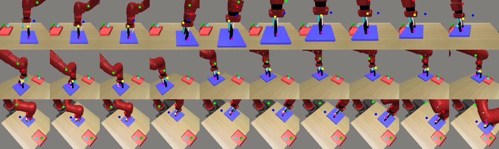

Abstract
Learning sensorimotor control policies from high-dimensional images crucially relies on the quality of the underlying visual representations. Prior works show that structured latent space such as visual keypoints often outperforms unstructured representations for robotic control. However, most of these representations, whether structured or unstructured are learned in a 2D space even though the control tasks are usually performed in a 3D environment. In this work, we propose a framework to learn such a 3D geometric structure directly from images in an end-to-end unsupervised manner. The input images are embedded into latent 3D keypoints via a differentiable encoder which is trained to optimize both a multi-view consistency loss and downstream task objective. These discovered 3D keypoints tend to meaningfully capture robot joints as well as object movements in a consistent manner across both time and 3D space. The proposed approach outperforms prior state-of-art methods across a variety of reinforcement learning benchmarks.
Main Idea
In a 3D scene, we collect observation from multiple cameras. Our unsupervised learning method learns temporally-consistent 3d keypoints via interaction with the environment. We jointly train a policy on top of the learned 3d keypoints. The keypoint based policy enables more efficient task learning.
{kind=link}
Overview of the Algorithm
{kind=link}
(a) For each camera view, a fully convolutional neural network encodes the input image into K heat maps and depth maps. (b) We then treat these heat maps as probabilities to compute expectation of spatial uv coordinates in camera plane. These expected values and the saptial variances are used to resample final uv keypoint coordinates which adds noise that prevents the decoder from cheating to hide the input information in the relative locations uv keypoints. We also take expectation of depth coordinate, d, using the same probability distribution. These [u,v,d] coordinates are then unprojected into the world coordinate. (c) We take attention-weighted average of keypoint estimations from different camera views to get a single prediction in the world coordinate. (d) For decoding, we project predicted keypoints in world coordinate to [u, v, d] in each camera plane. (e) Each keypoint coordinate is mapped to a gaussian map, where a 2D gussian is created with mean at [u, v] and std inversely proportional to d. For each camera, gaussian maps are stacked together and passed into decoder to reconstruct observed pixels from the camera. (f) Together with reconstruction, we also jointly train a task MLP policy on top of predicted world coordinates via reinforcement learning.
Visualizations


{kind=link}
{kind=link}

{kind=link}
The following video shows our policy successfully dressing a human with a scarf.
ICML Oral Presentation
Paper and Bibtex
|
|
Citation |
|
@inproceedings{chen2021unsupervised,
title={Unsupervised learning of visual 3d keypoints for control},
author={Chen, Boyuan and Abbeel, Pieter and Pathak, Deepak},
booktitle={International Conference on Machine Learning},
pages={1539--1549},
year={2021},
organization={PMLR}
}
|